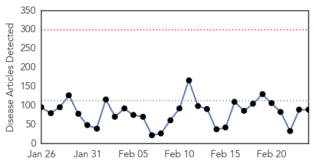
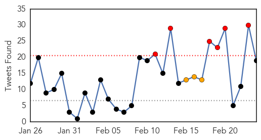
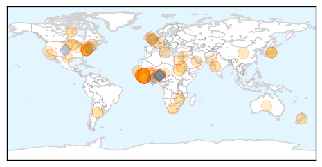
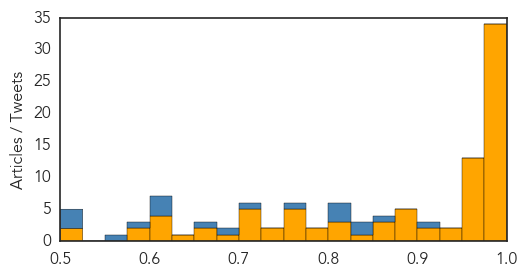
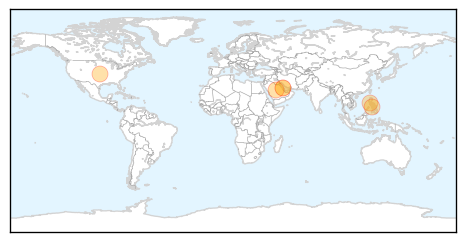

Ebola
30-Day Web Trend
0 alerts, 0 warnings

30-Day Twitter Trend
12 alerts, 4 warnings

Article Locations
Article Confidences
Top Articles:
- 1.000
- Six challenges to stamping out Ebola
- 1.000
- Liberia Lifts Curfew, Opens Borders After Curbing Ebola
- 1.000
- Ebola Rebounding In Sierra Leone? Virus Transmissions Still ‘Widespread’ In Freetown
- 0.999
- Ebola Drug in Guinea Helps Some, Stirs Debate on Broader Use
- 0.999
- THE STREET JOURNALTHE STREET JOURNAL
- 0.998
- Fear of Ebola's sexual transmission drives abstinence, panic
- 0.998
- Ebola drug’s early results promising, researchers report
- 0.998
- Ebola drug in Guinea helps some, stirs debate on broader use
- 0.998
- What Happened With The Ebola Epidemic Since You Stopped Paying Attention
- 0.998
- Ebola crisis: Liberia to open borders as infection falls
- 0.996
- First Ebola survivors talk of hope and despair in Guinea
- 0.996
- WHO Regional Director for Africa Dr Matshidiso Moeti visits Sierra Leone
- 0.996
- Liberians enjoy return to normal life
- 0.996
- Quick test for Ebola
- 0.995
- EurekAlert! Science News
- 0.995
- Interview: UN official urges vigilance as Ebola situation improves
- 0.995
- Ebola Fight is not yet over, it stops with us « Awoko Newspaper
- 0.994
- Fighting Ebola in Sierra Leone
- 0.993
- Paper-based test can detect Ebola in minutes
- 0.993
- New WHO Regional Director Commends Sierra Leone in the Fight against Ebola
- 0.992
- Three words of advice for WHO Africa's new chief
- 0.992
- Japanese flu drug shows some promise in first tests against Ebola in West Africa, study finds
- 0.991
- Ebola drug tests show improved chances of survival when administered early
- 0.990
- Limited promise in early results from Ebola drug trial
- 0.986
- 10 SA health workers on Ebola mission in Sierra Leone
- 0.983
- MN Ebola Monitoring
- 0.983
- Quarantines Without Food Threaten Ebola Response in Sierra Leone
- 0.982
- Limited promise in early results from Ebola drug trial
- 0.982
- Ebola Vaccine Stigma Impacts Measles and Polio Campaigns
- 0.982
- News and Press Release Distribution
- 0.980
- Mourners remember Conaway as political giant
- 0.980
- Hogan to announce agricultural initiative
- 0.980
- Obama proposes tougher consumer rules to protect IRA investors
- 0.976
- Preliminary results of the JIKI clinical trial to test the efficacy of favipiravir in reducing mortality in individuals infected by Ebola virus in Guinea.
- 0.973
- US Health officials Visit Liberia, Guinea
- 0.971
- Ebola’s stigma recalls leprosy
- 0.971
- Missionary Who Contracted Ebola Returns to Liberia
- 0.971
- Obasanjo visits Ebola-hit countries
- 0.970
- Remember Ebola’s orphans, but don’t forget all the other affected children - Sierra Leone
- 0.968
- Preliminary results in Ebola drug trial released
- 0.967
- Dead Que. man tests negative for Ebola
- 0.967
- President Koroma lauds UNMEER, commends outgoing Crisis Manager
- 0.963
- Perfect Science
- 0.960
- HIV Care Slammed by Ebola
- 0.960
- Kailahun People Beg MSF to Stay
- 0.960
- Medicago wins contract to develop Ebola treatments
- 0.956
- Mitigating the Impact of Ebola in Potential Hot Zones: A Proof-of-Concept Approach to Help Decisionmakers Prepare for High-Risk Scenarios Outside Guinea, Liberia, and Sierra Leone
- 0.945
- Border Communities educated on Ebola
- 0.938
- UPDATE 1-Medicago wins contract to develop Ebola treatments
- 0.922
- PHIL donates to Ebola affected communities
Showing top 50 articles...
Top Tweets:
- 0.972
- Ending the Ebola Outbreak - New York Times http://t.co/5Gqk4UiRkp ebola EVD
- 0.955
- MIT Lab Develops Rapid Diagnostic Tests For Ebola And Dengue - Forbes http://t.co/CqAdHh3a6q ebola EVD
- 0.926
- Ebola Drug Shows Some Promise in First Tests in West Africa - ABC News http://t.co/2jZGplvZnS ebola EVD
- 0.920
- Many caveats on promising Ebola drug trial - Science AAAS http://t.co/Mxas9BdmF9 ebola EVD
- 0.915
- Liberia's Ebola human waste dilemma - BBC News http://t.co/07iKoM3Qg1 ebola EVD
- 0.908
- Ebola Update: 23,539 confirmed, probable and suspected cases reported in 3 most affected countries, with 9,541 deaths. EbolaResponse
- 0.907
- Simple paper strip can diagnose Ebola and other fevers within 10 minutes - Medical Xpress http://t.co/4rpGrODbLF ebola EVD
- 0.873
- Fear of Ebola's sexual transmission drives abstinence, panic - Reuters http://t.co/yiSc1sWnTt ebola EVD
- 0.873
- Fear of Ebola's sexual transmission drives abstinence, panic - Reuters http://t.co/AHcO97q1QW ebola EVD
- 0.797
- Audio. In West Africa, Fewer New Ebola Cases But Epidemic Still Uncontained Via http://t.co/dqUrtlsGB2
- 0.773
- Trials & tribulations: INSERM's favipiravir ebola treatment trial http://t.co/xQSerljaN3. As if ebola clinical trials aren't hard enough!
- 0.767
- Meriter patient no longer monitored for Ebola - http://t.co/gde4F4sDXG http://t.co/kfMC20Ax1E ebola EVD
- 0.763
- Nearly 1,000 CDC public health professionals have fought Ebola by land, water, & air: http://t.co/LgsQasCEkR
- 0.756
- Guinea Ebola infections double as hidden cases discovered: http://t.co/KyW6T2onDG … AfricaAgainstEbola
- 0.756
- Estimating the basic reproductive ratio for the Ebola outbreak in Liberia and SierraLeone http://t.co/T8q0aiVpOe
- 0.746
- As Ebola wanes, MN sticks with expensive monitoring program - Minnesota Public Radio News http://t.co/pTFSCTvkOI ebola EVD
- 0.746
- As Ebola wanes, MN sticks with expensive monitoring program - Minnesota Public Radio News http://t.co/fHbe21Yv7J ebola EVD
- 0.699
- RT: One of six Serbs working in SierraLeone has tested positive for Ebola, according to the Serbian consul in Freetown, Adon…
- 0.692
- First Ebola survivors talk of hope and despair in Guinea - Reuters http://t.co/8r2SNqSPSQ ebola EVD
- 0.669
- More MSF news; favipiravir reduce mortality in patients w low levels of Ebola virus-ineffective w hi viral loads http://t.co/0CKZkm83hY
- 0.665
- RT: Lack of Effect of Lamivudine on Ebola Virus Replication http://t.co/umWXzadzcw
- 0.664
- Dans la lutte contre Ebola, un essai encourageant pour l'antiviral favipiravir http://t.co/Ubv2CwFWH3 via
- 0.662
- RT: Ebola in Liberia: Monrovia schools get prevention training http://t.co/QrYBhVqvxB
- 0.660
- North Korea's Ebola Restrictions Impede Economic Growth for Political Gain - Voice of America http://t.co/MWKZG4TV9o ebola EVD
- 0.657
- Assessing the Direct Effects of the Ebola on LifeExpectancy in Liberia, Sierra Leone and Guinea PLOSCurrentsOut http://t.co/NpE0NBfIgg
- 0.643
- Ebola Diary: Is it bouncing back? - http://t.co/9p21lKLIva http://t.co/aYTMCWshr7 ebola EVD
- 0.641
- Doctor who survived ebola gives blood sample to aid in research - KSAT San Antonio http://t.co/wGOVxXWpz5 ebola EVD
- 0.641
- Doctor who survived ebola gives blood sample to aid in research - KSAT San Antonio http://t.co/WKlpRAObJ5 ebola EVD
- 0.641
- Doctor who survived ebola gives blood sample to aid in research - KSAT San Antonio http://t.co/3BVkPELfEr ebola EVD
- 0.627
- First Ebola survivors talk of hope and despair in Guinea - Fox News http://t.co/hMbOSPvlRY ebola EVD
- 0.592
- RT: Ebola cases are down in Sierra Leone. Here's how is working on StoppingEbola for good: http://t.co/Dl17qQswXz
- 0.592
- After RITE implemented, nearly 3x as many Ebola patients entered isolation and received treatment. http://t.co/Sl8GW9g7ES
- 0.580
- RT: .@WHOAFRO Dr Moeti goes 2 SierraLeone 2 c first hand what can do 2 strengthen efforts to get Ebola cases to 0 http://t.…
- 0.563
- RT: There are a number of challenges facing Ebola control, writes. One of the wildcards is rain. http://t…
- 0.502
- UN seeks $900 million for phase 2 Ebola response http://t.co/fjeWFBDxg8
MERS
30-Day Web Trend
17 alerts, 0 warnings

30-Day Twitter Trend
7 alerts, 2 warnings

Article Locations
Article Confidences

Top Articles:
- 0.999
- UN experts warn of "critical knowledge gaps" on Saudi MERS virus
- 0.999
- WHO notes stubborn MERS puzzles as Saudi cases climb
- 0.999
- Saudi Arabia reports 5 more MERS cases
- 0.993
- Philippines on alert to prevent entry of infectious diseases: official
- 0.947
- ‘Children less susceptible to MERS infection’
- 0.946
- Good hygiene practices can prevent MERS-CoV - DOH
- 0.703
- 43 Cases of MERS-CoV in Saudi Arabia are Reported to WHO
Top Tweets:
- 0.664
- AFD Blog `Saudi MOH Reports 5 New MERS Cases' MERS-CoV http://t.co/impUBVeRNc
- 0.551
- AFD blog `Postcards From The MERS Twitterverse' MERS-CoV http://t.co/oOzKYDuI3H
- 0.537
- reassesses the risk of MERS-CoV to Europe as cases rise in Saudi Arabia again: http://t.co/o7atnNYDzI”
- 0.510
- ECDC reassesses the risk of MERS-CoV to Europe as cases rise in Saudi Arabia again: http://t.co/pIO6eoxXRs